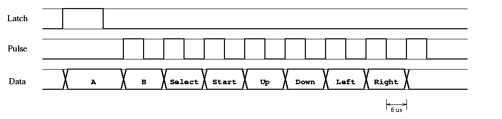

The Controller Handler interprets signals coming from the Nintendo Entertainment System Controller and outputs 8 positive-true lines—one for each button of the controller—which go the the MCU.
Player input is via the controller, the same interface one would use to play the NES Dr. Mario. There are quite a few pages on the Internet describing the specifications of the NES (most are about emulating the NES hardware), and a few which talk about the protocol that the NES uses to interface with the controller. However, the most useful information, oddly enough, was found in the x86 Linux source tree under “joysticks.” Apparently, some people like to retrofit NES and SNES controllers to the joystick port of Linux machines.
The NES controller's cord ends with a male “D-cannon” connector, as one source dubbed it. After acquiring an unwanted NES system, I took it apart to obtain a female D-cannon and unsoldered the piece connecting the wires from the connector to the main NES circuit board.
+----> Power (white)
|
5 +---------+ 7
| x x o \
| o o o o |
4 +------------+ 1
| | | |
| | | +-> Ground (brown)
| | +----> Pulse (red)
| +-------> Latch (orange)
+----------> Data (yellow)
|
Of the seven wires, two of them literally go nowhere; they are not connected to the circuit board or anything else. Of the remaining five, one goes to +5V and the other goes to ground, thus leaving three interesting wires. Since 2³ = 8, one might assume that the eight controller buttons translate to these three output lines; this is not the case, especially since the NES games can register when more than one button is being simultaneously held down.
|  |
The NES uses a serialized polling mechanism to query the state of the buttons. Every 60 Hz, the NES sends a 12us high signal to the Latch pin, telling the controller to latch the state of of all buttons internally. Six microseconds later, the NES sends 8 high pulses on the Pulse pin, 12us per full cycle, 50% duty cycle.
After the initial wide pulse on the Latch pin, Data goes high until the eighth pulse passes, at which point it drops low again. For each pulse on the Pulse pin, Data will assert ground if the button corresponding to that pulse was pressed. (The button states on Data are thus negative true.) The button order is always the same: A, B, Select, Start, Up, Down, Left, Right.
By mimicing the NES's polling mechanism using clocks generated from CPLD 2, I use a 17-state FSM implemented on CPLD 3, using the clocks and the Data pin as input, that drove 8 positive-true lines—one for each button. (These, when connected to the LEDs, were quite impressive.)
{kind=link}